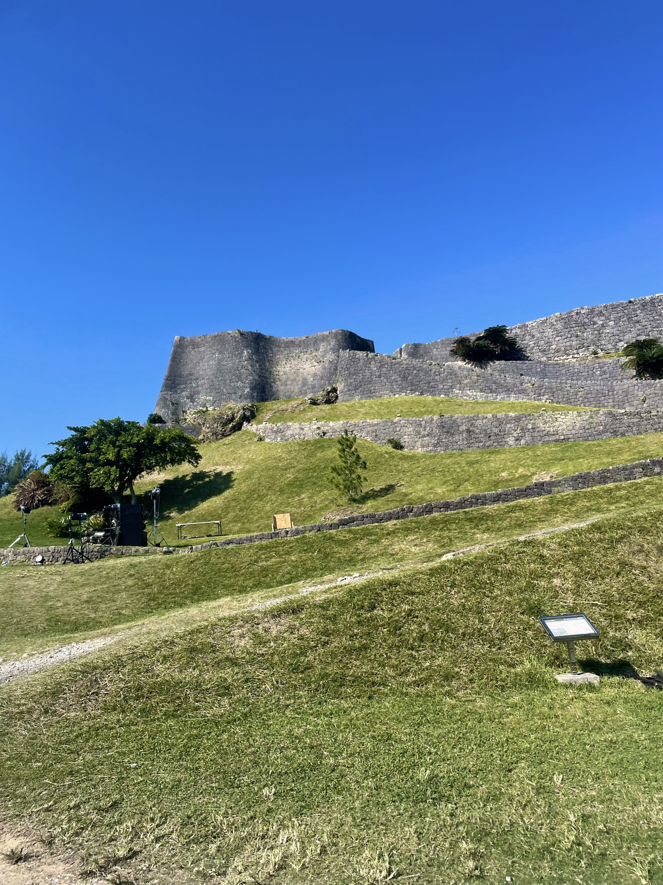
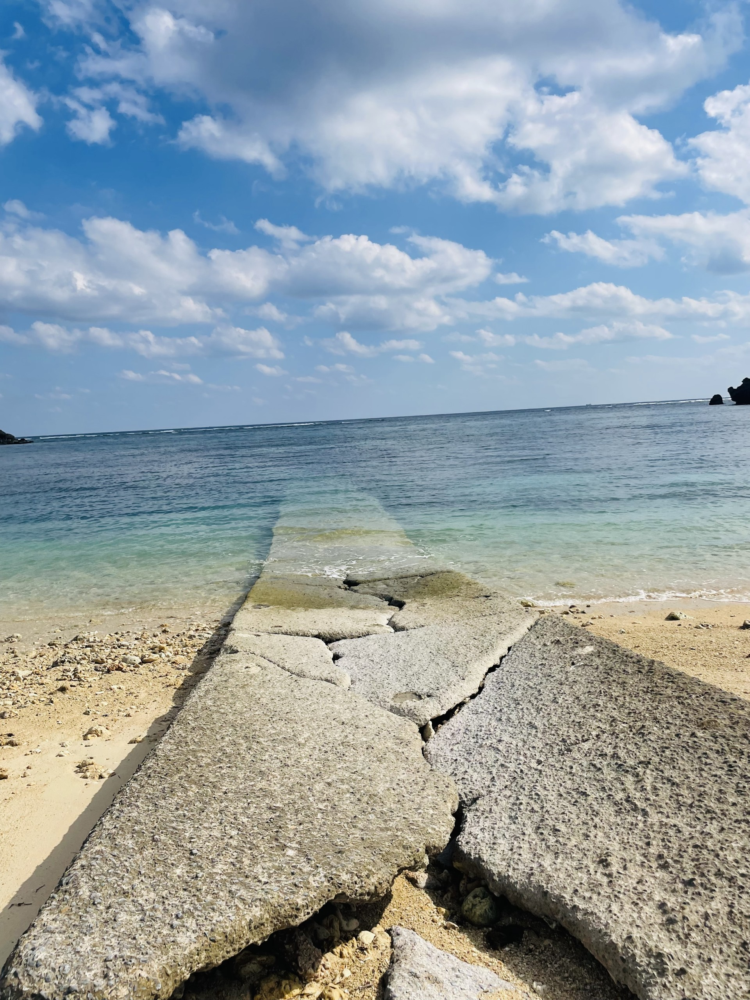
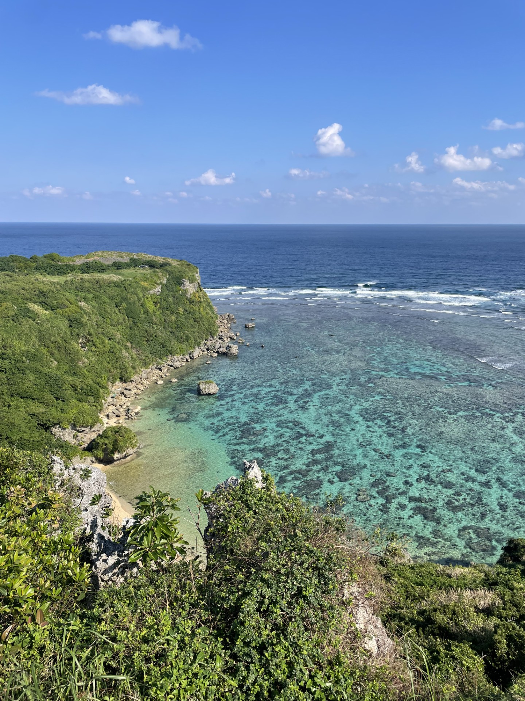

自然と歴史に出会う、安らぎの時間
沖縄本島の東部に位置する与勝半島は、自然の豊かさと歴史的な文化が息づく地域です。
美しい海や緑に囲まれ、昔ながらの街並みや史跡が今も残されています。
ゼミ調査で訪れた私のおすすめ観光スポットを紹介します。

琉球王国時代の歴史が色濃く残る勝連城跡。
石垣の上まで登ると、与勝半島の海と空が一面に広がり、
まるで時代を超えたような景色に出会えます。

地元の人にも親しまれている静かなビーチ。
透き通るエメラルドグリーンの海と、
ゆったり流れる時間が魅力です。

「幸せ岬」とも呼ばれる果報バンタ。
崖の上から見下ろすコバルトブルーの海は、
写真では伝えきれないほどの美しさです。
実際に与勝半島を歩きながら調査を行う中で、
観光地としての魅力だけでなく、
地域の暮らしや文化そのものが観光資源になっていることを感じました。
写真や資料だけでは分からない、
現地に足を運ぶことの大切さを学ぶ貴重な経験となりました。